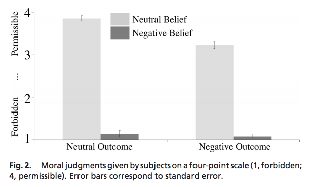
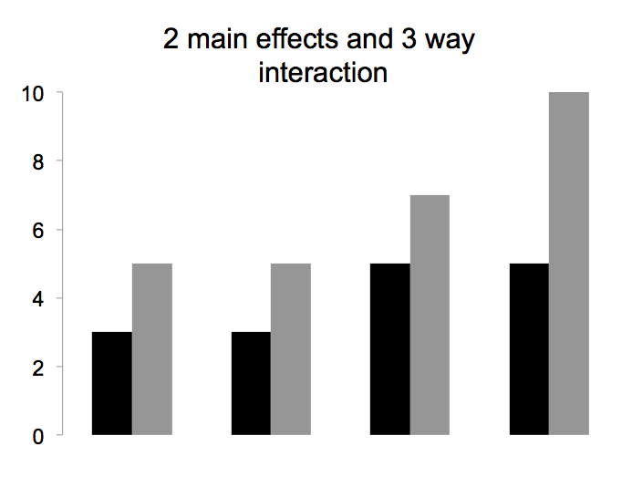
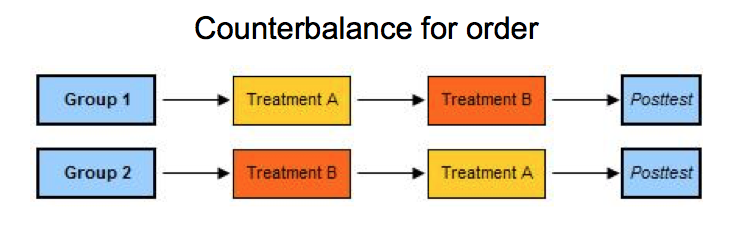

name: title class: middle, center, dark <center> <h1>Basic research design (part 2)</h1> </center> --- name: incBullet class: light # Agenda 1. Design of experiments 1. Randomization and counterbalancing 1. Reliability & Validity 1. Measures - Types of measures - Statistics and measure choice --- class: light, # Terminology 1. DV (dependent variable) - Measured output value of interest 1. IV (independent variables, factors) - Input variables that can be changed 1. Levels - Specific values of factors (inputs) - Can be continuous or discrete 1. Interaction - Effect of one input factor depends on level of another input factor --- class: light, middle # What are examples of factors? --- class: light, # Two-factor Experiments 1. Two factors (inputs) - A, B 1. Separate total variation in output values into: - Effect due to A - Effect due to B - Effect due to interaction of A and B (AB) - Experiment error --- class: light, # Is putting a substance in coffee morally permissible? Example from Young et al. (2007) "Neural basis of the interaction between theory and moral judgment". PNAS. [<a href="http://www.pnas.org/content/104/20/8235.full.pdf">PDF</a>] <br> Read vignettes that varied in two factors, Belief and Outcome. e.g., "Grace is touring a chemical plant. She gets some coffee, and her friend asks for some coffee too with sugar"... .col1[ ] .col2[  ] --- class: light, # Terminology for factorial designs <img src="images/factorialresultpatterns.png" width="720"> --- class: light, # Generalized m-factor Experiments .col1[ Effects for 3 factors: **A** **B** **C** **AxB** **AxC** **BxC** **AxBxC** ] .col1[ Effects for 4 factors: **A** **B** **C** **D** **AxB** **AxC** **AxD** **BxC** **BxD** **CxD** **AxBxC** **AxBxD** **…** ] --- class: light, # Interpretation gets difficult!  --- class: light # Between vs. Within vs. Mixed Designs .infobox[ **Between subject** When the subject is exposed to only a single level of the favors of a design. ] <br> .infobox[ **Within subject** Subject assigned to multiple (or all) levels of the the factors in the design ] <br> .infobox[ **Mixed** Subjects exposes to single level for some factors and multiple levels for other factors. ] --- class: light, middle, center <img src="images/circle.svg"> # Counterbalancing and randomization --- class: light # The problem of counterbalancing There are usually more possible stimulus factors than experimental ones... - Left/right position of response buttons - Color of stimulus - What font is used - Order of tasks - Identity of stimulus .infobox[ If these issues are not addressed they introduce possible **confounds** ] The solution is often **counterbalancing** which ensures that an irrelevant variable is set one way for half of subjects, set another way for the other half. --- class: light # Example  - Logic of counterbalancing: Say, there is an advantage for the treatment that comes first in the order. If half of the participants have this advantage for Treatment A, and the other half for B, overall this advantage will "cancel out". --- class: light # Example from statistical word learning - Can learners take advantage of the statistical structure of utterances to learn words? .red[golabu].blue[padoti].green[tupiro].purple[bidaku].red[golabu] - Test on .red[golabu] vs. .red[bu].blue[pado] (Their finding is that infants listen longer to repeated presentation of the novel utterance) - You need to counterbalance to make sure no general bupado preference - So, you create another language: .red[bupado].green[titupi].blue[robida].purple[kugola].red[bupado] - Test on .purple[gola].red[bu] versus .red[bupado] .footnote[From Saffran, Aslin, & Newport, 1996 <a href="http://pzacad.pitzer.edu/~dmoore/1996_Saffran,%20Aslin,%20Newport_Stat'l%20Learning%20at%208%20mos_Science.pdf">PDF</a>] --- class: light # It gets crazy to counterbalance everything! <img src="images/crazyfactors.png" width="680"> --- class: light # What can you do if things get crazy? - Incomplete designs (i.e., incomplete counterbalancing) - Latin squares - Randomization - Usually a safe choice. Good for very large N, or complex designs. --- class: light # Latin Squares Latin square in an NxN array filled with n different symbols, each occurring exactly once in each row and once in each column. <img src="images/latinsquare.png" width="680"> - Then, equal number of participants get each ordering in the square (like in counterbalancing.) - But this gets very difficult for larger designs (more than two factors) --- class: light # The simple power of randomization .col1[ - For each participant that enters experiment, you randomly determine the stimulus factors/configuration/ ordering/etc. by flipping a coin (or using a random number generator in the computer). - Treats stimulus factor as something "beyond your control," just like random aspects of subject (e.g., how sleepy they are, etc...). - Works best in a large sample otherwise you can get confounds due to incomplete sampling ] .col2[ ] --- class: light, center, middle, clear <img src="images/circle.svg"> # Reliability & Validity --- class: light # Ground rules of experimental psych We are interested in a psychological construct or phenomenon, as measured through behavior. Specifically, we may want to know about the... - Sources of the construct - Effects of other factors - Individual variability -- We must create an **instrument** that **operationalizes** the construct, usually in a way that... - Is easy to measure/quantify - Takes the behavior out of the real world, and it brings into the lab where it can be manipulated. -- We must make an argument about how the construct of interest is connected to the instrument. --- class: light # Key concepts - **Reliability**: How well did we measure, and with how much error? - **Validity**: How well does this measurement represent the construct of interest? -- - Some types of validity... - **Face** validity: does it look like the construct? (Not the most important scientifically, but still worth considering) - **Internal** validity: Are you actually measuring something related to the construct? Did you consider the right causal relations between your variables? Confounds? e.g., can't just give a writing test before and after college, to measure if college improves writing. - **External** validity: How does your measure relate to other measures of the construct? Does it generalize to different, more realistic situations? --- class: light # Reliability **Test-retest reliability** - Run the same thing again later -- **Inter-rater reliability** - Does a different person looking at the same behavior code it is the same way? - Cohen's kappa: compares rate of observer agreement to rate of agreement by chance -- **Internal consistency reliability** - If a measurement has different parts getting at the same construct, do the individual parts tend to give similar answers? - Crohnbach’s alpha: higher reliability when questions correlate with each other --- class: light # Internal validity Usually relates to.. - How well was a study designed and run? - Was it really the treatment that caused the difference between the control and experimental groups? - Any confounds and other explanations? --- class: light # Issues to watch for regarding internal validity **Stimulus specificity** : Is the effect general across items? .footnote[Campbell & Stanley (1966)] -- **Order effects** : Does the order matter? Do subjects become tired and bored, more or less motivated? -- **Testing effects** : A pretest can affect subjects' performance on a post-test -- **Selection** : Subjects in comparison (e.g., the control and experimental) groups should be functionally equivalent at the beginning of a study. -- **Experimental attrition** : If one group has higher dropout than others, may bias selection -- ** Hawthorne effect** : The fact that participants know they are being studied may change how they react to treatment. --- class: light # Example: GRADUATE RECORD EXAMINATIONS (GRE) ## Is the GRE reliable? Would test takers maintain the same relative score, if the test were administered more than once? (e.g., test-retest correlation) <br> For what it's worth, here are some reliability estimates from ETS.. - Verbal reasoning: 0.93 - Quantitative reasoning: 0.95 - Analytical writing: 0.87 --- class: light # Example: GRE ## Is the GRE internally valid? **Confounds** in administration or in design? - Unwanted factors affecting results - (E.g. item and order effects in other types of experiments)? **Demand** characteristics? - Unusual for difficult performance-based measures - But potentially common for measures of opinion, reaction, etc. --- class: light # Example: GRE ## Is the GRE externally valid? Does it measure something outside of itself? - Correlate with other tests? - Correlate with graduate school grades? - Correlate with success as researcher? --- class: light, middle, center <img src="images/circle.svg"> # Measures --- class: light # Scales of measurement Types of variables... <br> **Nominal**: distinct (categorical) values; - what mode of transport do you use most often? options: "train", "bus", "car", etc. **Ordinal**: ordered values - "very good", "good", "okay", "bad", "very bad" etc. **Interval**: quantitative with meaningful numeric values - e.g., temperature <br> **Ratio**: quantitative with a zero point - e.g., mass --- class: light # Why be careful about scales? - Only some analyses are applicable to some scales - You wouldn’t want to take the mean of an ordinal variable, e.g., with values - Elementary school education - High school graduate - Some college - College graduate - Graduate degree -- <br> - Doesn’t make sense to take the mean - Midpoints are not interpretable - Instead you can take the median --- class: light # Nominal variables Sets of distinct (categorical) values: - Football player numbers - Subject numbers - Flavors of ice cream - Therapy, Drugs, Drugs+Therapy, Control - Friends, Romans, Countrymen --- class: light # Nominal variables: Statistics How do you find the central tendency? - Don't take a mean, take a mode How do you test for differences in distribution? - Chi-square tests are convenient --- class: light # Nominal variables: Statistics - Could compute the mode, which is orange - Could use chi-square to test if distribution if different from uniform random - Could use chi-square to test if color distribution is independent of M&M flavor (regular, peanut, etc.), which is another nominal variable --- class: light # Ordinal variables **Arbitrary orderings** - Rankings (e.g., gold, silver, bronze) - Likert scales (e.g. from 1-7) <img src="images/Likert.png" width="720"> --- class: light # Common Likert Scales - Strongly Agree - Agree - Undecided - Disagree - Strongly Disagree - Very Frequently - Frequently - Occasionally - Rarely - Very Rarely - Never - Extremely Poor - Below Average - Average - Above Average - Excellent - Almost Always True - Usually True - Often True - Occasionally True - Sometimes But Infrequently True - Usually Not True - Almost Never True --- class: light # Ordinal variables How do you find the central tendency? - It depends.. a mean could be reasonable for Likert scale. Median useful too -- How do you measure relationships between ordinal variables? - Spearman rank correlation -- How do you test for differences in distribution? - Well... It depends. - Non-parametric stats are useful. But can also standard stats are used for Likert scales --- class: light # Correlation on ordinal scales Spearman correlation is appropriate for comparing ranks <br> <img src="images/Spearman.png" width="720"> --- class: light # Non-parametric statistics - General family of statistical tests appropriate for ordinal data -- - Assume ordering but not interval -- - Also useful for cases in which data violate linearity -Make fewer distributional assumptions -Less power -- - Examples - Wilcoxon signed-rank test, e.g., which counts how many times treatment > control on some measure (use instead of paired t-test) - Kruskal-Wallis (use instead of one-way ANOVA, for seeing if k different groups have same distribution) --- class: light # The case of Likert scales Common to assign numeric levels: - E.g. strongly agree = 1, strongly disagree = 5 Can you average these levels? - This is a question about whether 1 is as far from 2 as 2 is from 3 - Not clear, though common practice is to do so One rule of thumb is that stuff is more interval around the middle but gets weird around the edges --- class: light # Interval variables Equal increments but no true zero - Celsius temperature - Measuring people -GRE -Fitness -BMI In the social sciences, we often don’t care about zero .center[] --- class: light # Ratio variables Intervals with a true zero - Temperature in Kelvin - Reaction time - Numbers of things --- class: light # Interval and ratio variables: Stats How do you find the central tendency? - Mean -- How do you measure relationships between interval/ratio variables? - Pearson correlation -- How do you test for differences in distribution? - Regression, ANOVA, etc. -- Bonus: for ratio variables, you can divide them..e .g., 3x more makes sense --- class: light # Considerations for choosing a measure How many alternatives? -2 AFC –Many AFC –Free response <br> -- Information content - More alternatives = more information -- Task demands - Fewer alternatives = faster, easier for kids/impaired populations - Fewer alternatives better for RT -- Ease of analysis - E.g. free response hard to analyze! -- Diagnosticity - More alternatives is more difficult - If too easy or difficult, you can’t see differences --- class: light # Information content <img src="images/InfoContent.png" width="720"> .bottom[(Rosenthal & Rosnow)] --- class: light Thanks to Todd Gureckis and Michael Frank (Stanford) for slides.